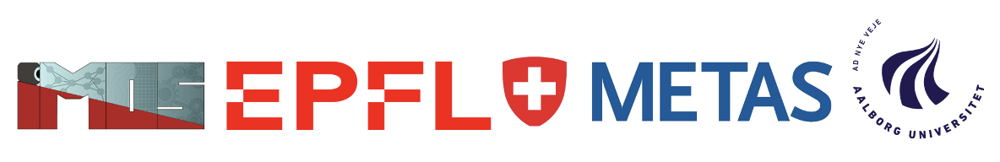

Measured, not simulated
Data were acquired from the physical Smart Water Infrastructures Laboratory (SWIL) testbed at Aalborg University.
Synchronized multi-physics measurements for virtual sensing, smart heat metering and time-series learning in district heating networks.
1 IMOS, EPFL, Switzerland · 2 Aalborg University, Denmark · 3 Grundfos, Denmark


Public district heating datasets rarely combine synchronized measurements of internal network dynamics and reliable consumer-side reference signals. IMOS–SWIL provides a controlled experimental benchmark for evaluating data-driven sensing methods under changing thermal and hydraulic conditions.
Data were acquired from the physical Smart Water Infrastructures Laboratory (SWIL) testbed at Aalborg University.
Temperature, pressure and flow signals capture interconnected thermal and hydraulic dynamics at a common two-second interval.
Two smart meters in series at each consumer station provide redundant measurements, averaged to reduce measurement noise.
The data were collected through the Intelligent Thermal Energy Networks (ITEN) project, funded by the Swiss Federal Institute of Metrology (METAS).
The experimental installation includes a heat station, a pumping station, pipe modules and two consumer substations in a tree-structured district heating configuration. Four load configurations were generated by varying consumer fan speeds; boiler on–off control introduced additional thermal dynamics.

The physical installation provides synchronized measurements from a controlled district heating network, enabling the study of thermal and hydraulic dynamics under different operating conditions.
The photograph and module diagram are the original figures from the associated publication.

Industrial-grade electromagnetic flow meters, pressure/temperature sensors and Kamstrup MULTICAL® 303 smart heat meters. All signals are synchronized at 0.5 Hz.
Testbed documentation (PDF) ↗Both fans at maximum speed, both one step below maximum, and two asymmetric fan-speed configurations. Boiler control reheats water to approximately 50 °C.
Measurement setup and protocol ↗| Measurement | 5th–95th percentile | Unit |
|---|---|---|
| Temperature | 16.89–49.93 | °C |
| Flow rate | 0.09–12.59 | L/min |
| Pressure | 3.27–10.71 | bar |
Reported operating ranges across relevant sensors in the associated publication.
Four CSV files cover approximately 29.88 hours of synchronized operation. Each file contains 65 variables without missing values, according to the release metadata.
| File | Samples | Duration | Relative duration | Size | Download |
|---|---|---|---|---|---|
| DS01.csv | 15,218 | 8.45 h | 6.7 MB | CSV ↓ | |
| DS02.csv | 15,286 | 8.49 h | 6.7 MB | CSV ↓ | |
| DS03.csv | 15,078 | 8.38 h | 6.8 MB | CSV ↓ | |
| DS04.csv | 8,200 | 4.56 h | 3.7 MB | CSV ↓ | |
| Total | 53,782 | 29.88 h | — | — | Zenodo ↗ |
Example: Boiler_T1, Pipe_T2_1, Consumer_T_21.
Example: Boiler_dP2, Pipe_P1_1, Pump_P3_1.
Example: Boiler_Q2_1, Pipe_Q3_1, Consumer_Q1_21.
| Quantity | Consumer 1 | Consumer 2 |
|---|---|---|
| Flow rate | avg_of_F1_F2 | avg_of_F3_F4 |
| Inlet temperature | avg_of_T1_in_T2_in | avg_of_T3_in_T4_in |
| Outlet temperature | avg_of_T1_out_T2_out | avg_of_T3_out_T4_out |
| Volume | avg_of_V1_V2 | avg_of_V3_V4 |
| Energy | avg_of_E1_E2 | avg_of_E3_E4 |
The released files also retain auxiliary channels beyond the 44 principal SCADA inputs and 10 smart-meter variables. The paper evaluates six targets (flow, inlet temperature and outlet temperature at each consumer).
Explore measured data from any of the four operating conditions. Compare sensors, inspect individual samples and zoom into the synchronized time series. Files stay in your browser.
| Signal | Min | Max | Mean | Negative | Zero | Valid |
|---|
Time is reconstructed from the two-second sample spacing. The y-axis never extends below zero when all visible measurements are nonnegative; genuine negative values remain visible. At full scale, the plot retains the minimum and maximum of each display bucket. Statistics, cursor values and exported data use the original samples.
The accompanying paper studies reconstruction of consumer-side flow and temperatures using the available SCADA measurements. HSTGNN learns modality-specific graph structures and temporal representations, then fuses them through cross-type attention.
44 SCADA signals of three sensor types; a sliding window of 16 samples.
Type-specific temporal and spatial graph modeling followed by cross-type attention.
Six virtual smart-meter measurements at the two consumer substations.
Train on three conditions and evaluate on the fourth; rotate the held-out dataset. Fit input normalization on training data only.
| Target | GRU-GCN | LSTM | 1D-CNN | DGC | GCN | HSTGNN |
|---|---|---|---|---|---|---|
| SM1 · Flow (L/min) | 0.1934 | 0.1908 | 0.2424 | 0.2137 | 0.2127 | 0.1803 |
| SM1 · Inlet (°C) | 0.2355 | 0.2478 | 0.2365 | 0.5202 | 0.5119 | 0.1722 |
| SM1 · Outlet (°C) | 0.1846 | 0.2519 | 0.2407 | 0.4392 | 0.4400 | 0.1656 |
| SM2 · Flow (L/min) | 0.1730 | 0.1660 | 0.2286 | 0.1879 | 0.1866 | 0.1590 |
| SM2 · Inlet (°C) | 0.1225 | 0.1672 | 0.1670 | 0.3311 | 0.3273 | 0.1115 |
| SM2 · Outlet (°C) | 0.0848 | 0.1225 | 0.1060 | 0.2024 | 0.2064 | 0.0740 |
Means over three runs, transcribed from the paper's four test-set result tables. Best values per target are highlighted. See the paper for standard deviations, MAE and ablation studies.
The dataset supports research beyond the original virtual metering task, including:
Virtual sensing, sensor fusion, missing-measurement reconstruction and state estimation.
Graph neural networks, multivariate time-series learning and cross-regime generalization.
Thermo-hydraulic system identification, digital twins and sensor quality monitoring.
These are potential research uses; the dataset release does not establish labeled fault events or a validated anomaly-detection benchmark.
If you use this dataset, please cite both the Zenodo dataset and the accompanying Energy and Buildings paper.
@dataset{faghihniresi2026imos_swil,
author = {Faghih Niresi, Keivan and Møller Jensen, Christian and
Kallesøe, Carsten Skovmose and Wisniewski, Rafal and Fink, Olga},
title = {{IMOS-SWIL District Heating Dataset}},
year = {2026},
version = {1.0.0},
publisher = {Zenodo},
doi = {10.5281/zenodo.23127439},
url = {https://doi.org/10.5281/zenodo.23127439}
}@article{niresi2026virtualsmart,
author = {Faghih Niresi, Keivan and Jensen, Christian Møller and
Kallesøe, Carsten Skovmose and Wisniewski, Rafael and Fink, Olga},
title = {Virtual Smart Metering in District Heating Networks via
Heterogeneous Spatial-Temporal Graph Neural Networks},
journal = {Energy and Buildings},
year = {2026},
url = {https://www.sciencedirect.com/science/article/pii/S0378778826014118}
}See the Zenodo record for the authoritative dataset metadata and licensing terms.
This work was funded by the Swiss Federal Institute of Metrology (METAS). The authors thank Kamstrup for providing the experimental hardware.